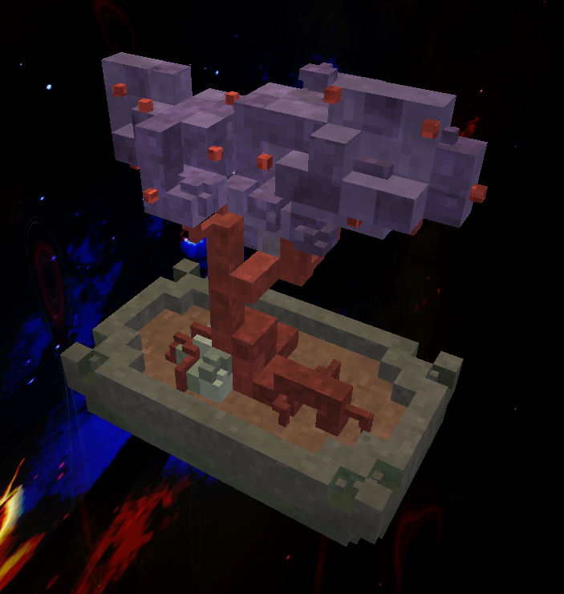
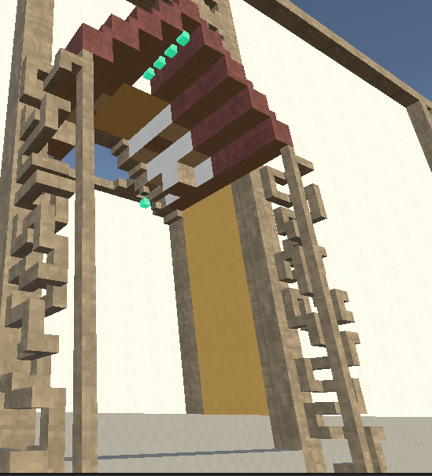
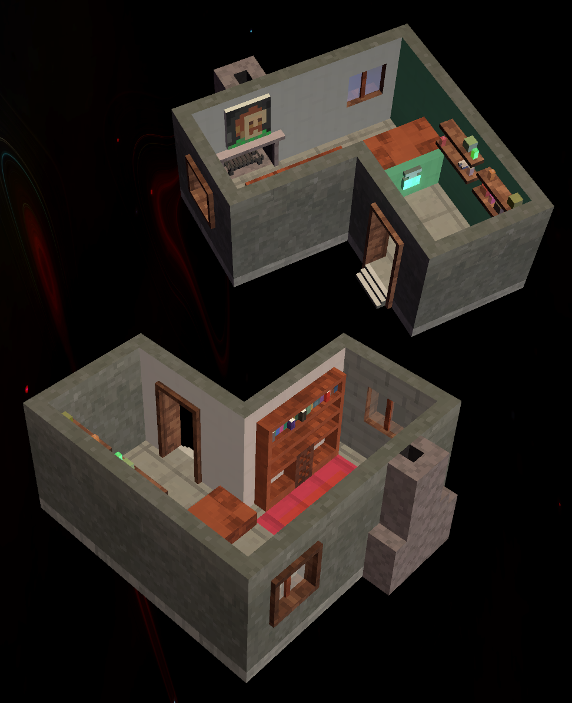
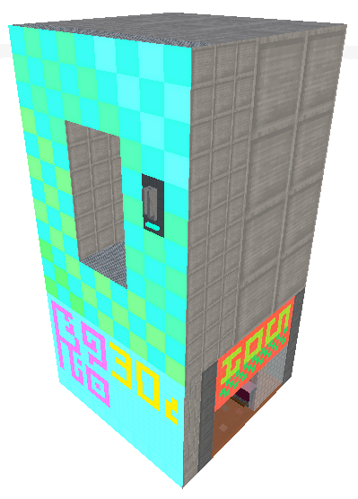

voxul
Introducing voxul, a voxel system and editor tool for Unity 3D. Use it to build voxel meshes, objects and levels.
The best way to demonstrate this tool is through showing its use. Unfortunately, I'm a much worse voxel artist than I am a tools programmer, and so the demonstration is but a shadow of its potential in my hands. I'd love to get it in the hands of someone a little more artistically talented and get some feedback. This is open source, and there is still plenty of optimization, polish and work to be done.

Where can I get it?
Download voxul here.
Requirements
- Unity 2020.3.2f1 or later
- Your project must include both the Universal Render Pipeline & Shadergraph
Installation
Either clone the Github repository above into the /Assets/ folder of your Unity project or use the Unity Package Manager to clone the above repository.
Features
- Advanced voxel mesh editor: add, remove, subdivide, select, copy/paste, mirror

- Supports transparency and emission
- Subdivision and resolution layering system that lets you mix and match different voxel grid resolutions.

- Automatic spritesheets and custom texturing for each voxel face. Paint surfaces separately, controlling color and texture

- Lots of useful utilities for building your voxel systems, like destroyable objects.
- Edit in-scene mesh objects, or save your meshes to their own
VoxelMeshassets. - Works efficiently and shares meshes with prefabs and multi-instanced objects.
Gallery
A destroyable voxel prototype I made.



